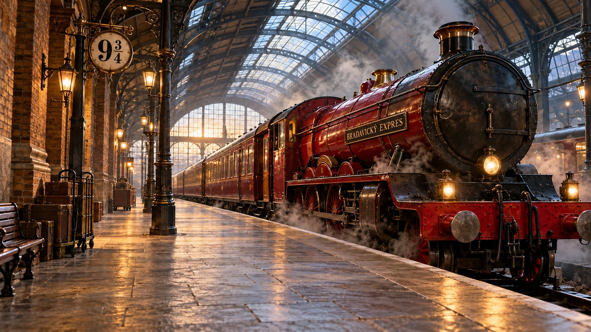

← Příčná uliceNástupiště 9¾
Bradavický expres už čeká. Nastup a vydej se na cestu do školy čar a kouzel.
Ověřuji školní nákupy…
Pokračovat k Moudrému klobouku →
← Příčná uliceBradavický expres už čeká. Nastup a vydej se na cestu do školy čar a kouzel.
Ověřuji školní nákupy…
Pokračovat k Moudrému klobouku →